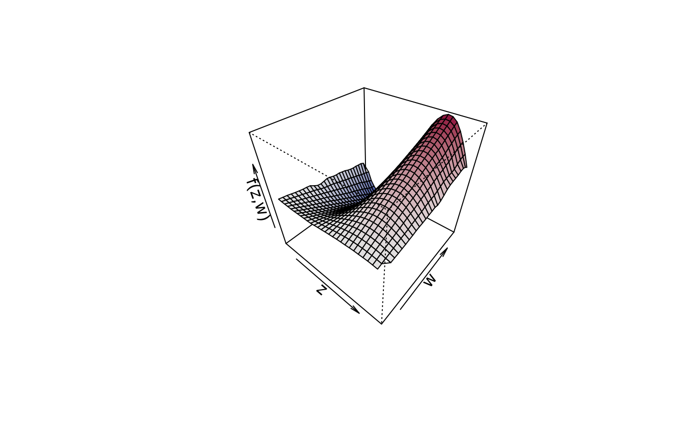

sliceplot.RdThis function plots slices from user defined values of bivariate surfaces.
sliceplot(x, y = NULL, z = NULL, view = 1, c.select = NULL,
values = NULL, probs = c(0.1, 0.5, 0.9), grid = 100,
legend = TRUE, pos = "topright", digits = 2, data = NULL,
rawdata = FALSE, type = "mba", linear = FALSE,
extrap = FALSE, k = 40, rug = TRUE, rug.col = NULL,
jitter = TRUE, ...)A matrix or data frame, containing the covariates for which the effect should be plotted
in the first and second column and at least a third column containing the effect. Another
possibility is to specify the plot via a formula,
e.g., for simple plotting of bivariate surfaces z ~ x + y, see the examples.
If x is a vector the argument y and z must also be supplied as
vectors.
If x is a vector the argument y and z must also be supplied as
vectors, z defines the surface given by \(z = f(x, y)\).
Which variable should be used for the x-axis of the plot, the other variable will be
used to compute the slices. May also be a character with the name of the corresponding
variable.
Integer, selects the column that is used in the resulting matrix to be
used as the z argument.
The values of the x or y variable that should be used for computing
the slices, if set to NULL, slices will be constructed according to the quantiles, see
also argument probs.
Numeric vector of probabilities with values in [0,1] to be used within function
quantile to compute the values for plotting the slices.
The grid size of the surface where the slices are generated from.
If set to TRUE, a legend with the values that where used for slicing
will be added.
The position of the legend, see also function legend.
The decimal place the legend values should be rounded.
If x is a formula, a data.frame or list. By default the
variables are taken from environment(x): typically the environment from which
plot3d is called.
If set to TRUE, the data will not be interpolated, only raw data will be
used. This is useful when displaying data on a regular grid.
Character, which type of interpolation method should be used. The default is
type = "akima", see function interp. The two other options are
type = "mba", which calls function mba.surf of package MBA, or
type = "mgcv", which uses a spatial smoother withing package mgcv for interpolation.
The last option is definitely the slowest, since a full regression model needs to be estimated.
Logical, should linear interpolation be used withing function
interp?
Logical, should interpolations be computed outside the observation area (i.e., extrapolated)?
Integer, the number of basis functions to be used to compute the interpolated surface
when type = "mgcv".
Add a rug to the plot.
Specify the color of the rug representation.
Similar to function plot3d, this function first applies bivariate interpolation
on a regular grid, afterwards the slices are computed from the resulting surface.
Function sliceplot can use the akima package to construct smooth interpolated
surfaces, therefore, package akima needs to be installed. The akima package has an ACM
license that restricts applications to non-commercial usage, see
https://www.acm.org/publications/policies/software-copyright-notice
Function sliceplot prints a note referring to the ACM license. This note can be suppressed by
setting
options("use.akima" = TRUE)
## Generate some data.
set.seed(111)
n <- 500
## Regressors.
d <- data.frame(z = runif(n, -3, 3), w = runif(n, 0, 6))
## Response.
d$y <- with(d, 1.5 + cos(z) * sin(w) + rnorm(n, sd = 0.6))
if (FALSE) ## Estimate model.
b <- bamlss(y ~ te(z, w), data = d)
summary(b)
#> Error in summary(b): object 'b' not found
## Plot estimated effect.
plot(b, term = "te(z,w)", sliceplot = TRUE)
#> Error in h(simpleError(msg, call)): error in evaluating the argument 'x' in selecting a method for function 'plot': object 'b' not found
plot(b, term = "te(z,w)", sliceplot = TRUE, view = 2)
#> Error in h(simpleError(msg, call)): error in evaluating the argument 'x' in selecting a method for function 'plot': object 'b' not found
plot(b, term = "te(z,w)", sliceplot = TRUE, view = "w")
#> Error in h(simpleError(msg, call)): error in evaluating the argument 'x' in selecting a method for function 'plot': object 'b' not found
plot(b, term = "te(z,w)", sliceplot = TRUE, probs = seq(0, 1, length = 10))
#> Error in h(simpleError(msg, call)): error in evaluating the argument 'x' in selecting a method for function 'plot': object 'b' not found
## Variations.
d$f1 <- with(d, sin(z) * cos(w))
sliceplot(cbind(z = d$z, w = d$w, f1 = d$f1))
## Same with formula.
sliceplot(sin(z) * cos(w) ~ z + w, ylab = "f(z)", data = d)
## Compare with plot3d().
plot3d(sin(z) * 1.5 * w ~ z + w, zlab = "f(z,w)", data = d)

sliceplot(sin(z) * 1.5 * w ~ z + w, ylab = "f(z)", data = d)
sliceplot(sin(z) * 1.5 * w ~ z + w, view = 2, ylab = "f(z)", data = d)